Балчик
Университетската ботаническа градина и Дворецът "Тихото гнездо" са визитната картичка на Балчик. Университетската ботаническа градина е разположена на площ от 65 дка. и днес има международна известност. Създадена е през 1955 година и вече 53 години в нея се съхранява колекция от над 2500 растителни видове от цял свят. Тук се намира и втората по големина кактусова колекция в света, която може да бъде видяна на открито от април до октомври. През останалата част от годината екземплярите се съхраняват при подходящи условия. Най-голямата подобна колекция е в Монако. Ботаническата градина е част от учебната база на Софийския университет, заедно с Ботаническата градина в Св. св. Константин и Елена. За редките и екзотични растения се грижат едни от най-добрите ботаници в България. Тук можете да видите богата колекция от палми, бонбонено, каучуково и книжно дърво, рядък екземпляр метасеквоя, древното гинкго, едроцветната магнолия и още много други видове. В съседство с Ботаническата градина се намира и Дворецът "Тихото гнездо". Той е създаден в периода 1924-1927 година от италианските архитекти по нареждане на румънската кралица Мария, която за много кратко време се влюбва в красотата и спокойствието на това място. Дворецът съчетава различни стилове от различни епохи, предмети докарани от цял свят като Елинистичният мраморен трон от Флоренция, разположен почти на брега на морето. Някои историци твърдят, че кралица Мария имала любовник турчин-моряк, който чакала на мраморния трон близо до морето.
Сграда в Балчик
Езерото- 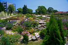
Красива градина
Дева Мария
Вратата към Гетсиманската градина- 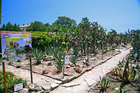
Кактуси
Кактусовата градина
Петунии
Старинни делви
Крайбрежната ивица
Плажа
Резиденции
Воден басейн
Балчик045
Продавач на вино
Балчик53
Балчик054
Чешма- 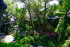
Зелена приказка
Мраморна чешма
Глинени делви
Изглед- 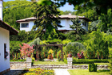
Красиво кътче - 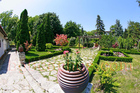
Ботаническата градина - 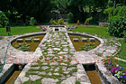
Малка градинка - 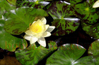
Жълта водна лилия
Розова водна лилия
Балчик
Плажната ивица
Балчик- 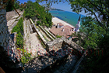
Лабиринт
Каменни стълби
Панорамна гледка
Изглед към морето на Балчик
Статуя на Дева Мария
Различни мотиви
Дворецът "Тихото гнездо"
Вила Пещерата
Водопадът в Двореца- 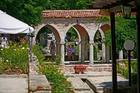
Нимфеумът в градината
Балчик
Под Нимфариума
Параклис "Света Богородица"
Кръст
Нимфeuум
Воден кръст
Розовта градина
Ухаеща магнолия
Езеро с водни лилии- 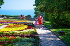
Гетсиманската градина
Ученици- 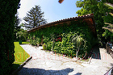
Малка къщичка
Магазин за сувенири